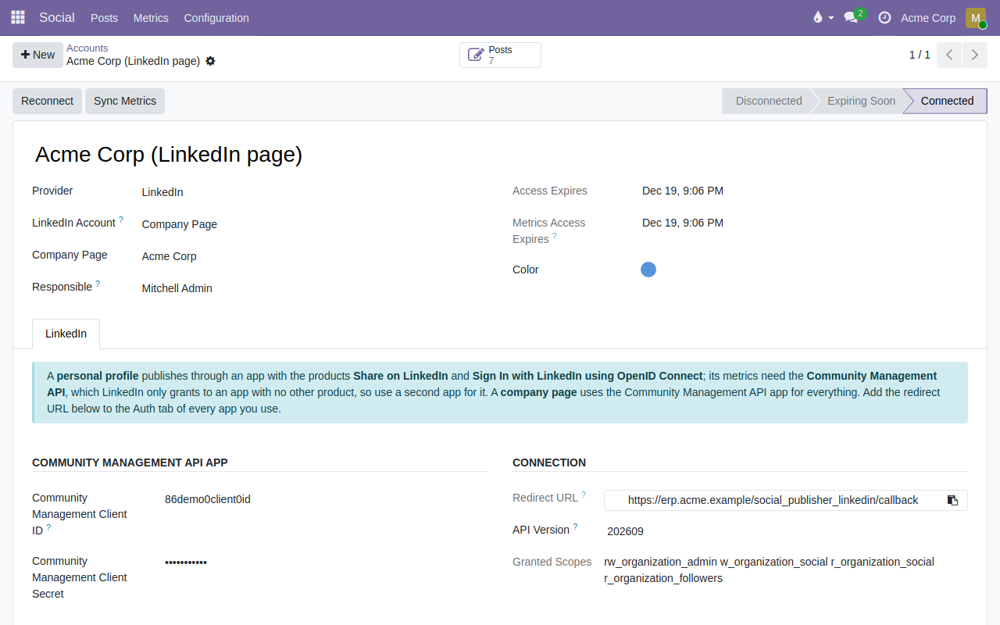
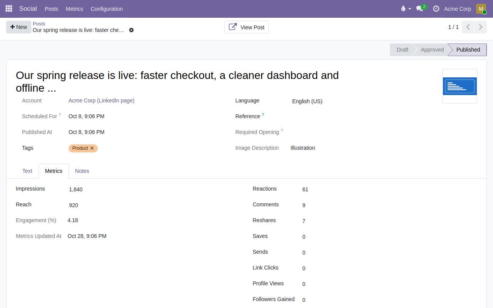

Adds LinkedIn to Social Publisher: connect personal profiles and company pages from Odoo, publish approved posts with an image at the scheduled time, and bring the analytics of every post back into Odoo.


Impressions, reach, reactions, comments, reshares and clicks per post, refreshed daily, plus account totals over the last 28 days.
Data goes only between your Odoo and the LinkedIn API, with the access you grant. Not affiliated with or endorsed by LinkedIn.
Questions and bug reports: GitHub issues.